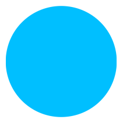
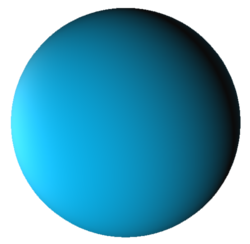
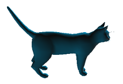

GeometryTypes


Geometry primitives and operations building up on FixedSizeArrays.
Some of the types offered by GeometryTypes visualized with GLVisualize:
HyperRectangle(Vec2f0(0), Vec2f0(100))
HyperRectangle(Vec3f0(0), Vec3f0(1))
HyperCube(Vec3f0(0), 1f0)
HyperSphere(Point2f0(100), 100f0)
HyperSphere(Point3f0(0), 1f0)
Pyramid(Point3f0(0), 1f0, 1f0)
load("cat.obj") # --> GLNormalMesh, via FileIO
Displaying primitives
To display geometry primitives, they need to be decomposable. This can be done for any arbitrary primitive, by overloading the following interface:
# Lets take SimpleRectangle as an example:
# Minimal set of decomposable attributes to build up a triangle mesh
isdecomposable{T<:Point, HR<:SimpleRectangle}(::Type{T}, ::Type{HR}) = true
isdecomposable{T<:Face, HR<:SimpleRectangle}(::Type{T}, ::Type{HR}) = true
# Example implementation of decompose for points
function decompose{PT}(P::Type{Point{3, PT}}, r::SimpleRectangle, resolution=(2,2))
w,h = resolution
vec(P[(x,y,0) for x=linspace(r.x, r.x+r.w, w), y=linspace(r.y, r.y+r.h, h)])
end
function decompose{T<:Face}(::Type{T}, r::SimpleRectangle, resolution=(2,2))
w,h = resolution
Idx = LinearIndices(resolution)
faces = vec([Face{4, Int}(
Idx[i, j], Idx[i+1, j],
Idx[i+1, j+1], Idx[i, j+1]
) for i=1:(w-1), j=1:(h-1)]
)
decompose(T, faces)
endWith these methods defined, this constructor will magically work:
rect = SimpleRectangle(...)
mesh = GLNormalMesh(rect)
vertices(mesh) == decompose(Point3f0, rect)
faces(mesh) == decompose(GLTriangle, rect) # GLFace{3} == GLTriangle
normals(mesh) # automatically calculated from meshAs you can see, the normals are automatically calculated only with the faces and points. You can overwrite that behavior, by also defining decompose for the Normal type!